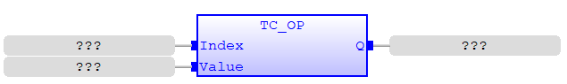
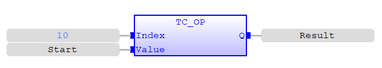
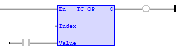
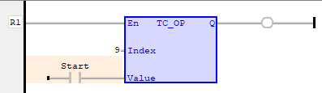

I/O Function
Applies a new OP request for the digital output specified.
|
Index : INT; |
Output number |
|
Value : BOOL; |
Value to be copied to the specified Output number |
|
Q : BOOL; |
The state of the selected output |
Sets the digital outputs to the binary pattern given in ‘Value’ input parameter.
TC_OP ( Index (*INT*) , Value (*BOOL*) );
Switch ON output 8.
TC_OP( 8 , TRUE );

The function below switches ON and OFF Output 10 based on condition of Start contact. ‘Result’ variable stores the value of Output 10.


The rung below copies the value of ‘Start’ variable to Output 9.
